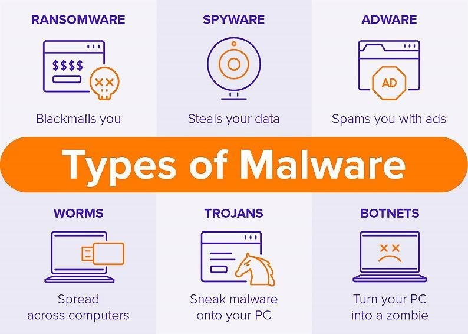

|  |
Types of MalwareEach type of malware has its own characteristics and methods of propagation, making them unique in their ability to cause harm. A virus is a type of malware that can replicate itself and spread from one computer to another through infected files or documents. Once installed, viruses can modify or delete files, damage software, and cause system crashes. They can be transmitted through email attachments, software vulnerabilities, and infected websites. Worms are self-replicating malware that can spread across networks and infect multiple devices without user intervention. Worms can exploit security vulnerabilities to gain access to a system and use it to propagate further. They can also be transmitted through email attachments and infected files. Trojan horses are malware programs disguised as legitimate software or applications. Once installed, they can perform a variety of harmful actions, such as stealing sensitive information or taking control of a device. They can be transmitted through email attachments, software downloads, and social engineering tactics.
Ransomware is a type of malware that encrypts a user's files or system and demands payment in exchange for a decryption key. Ransomware can be transmitted through email attachments, infected websites, and software vulnerabilities. Spyware is a type of malware that can track a user's online activity or steal sensitive information, such as passwords and banking details. Spyware can be bundled with other software or transmitted through infected websites. Adware is a type of malware that displays unwanted advertisements or pop-ups on a user's device. Adware can be bundled with other software or transmitted through infected websites. Rootkits are a type of malware that can hide their presence on a system by modifying the operating system or other low-level components. They can be difficult to detect and remove and are often used for targeted attacks. Rootkits can be transmitted through infected software or email attachments. |